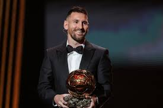

Lionel Messi

Datos rápidos
Nombre: Lionel Andrés Messi
Nacimiento: 24 de junio de 1987
Lugar: Rosario, Santa Fe, Argentina
Posición: Delantero
Origen y formación
Lionel Andrés Messi nació el 24 de junio de 1987 en el Hospital Italiano Garibaldi de la ciudad de Rosario, en la provincia de Santa Fe. Es el tercer hijo de Jorge Horacio Messi y Celia María Cuccittini. Tiene dos hermanos mayores, Rodrigo y Matías, y una hermana menor, María Sol.
Con apenas cuatro años, comenzó a practicar fútbol con Salvador Aparicio en el club Abanderado Grandoli, ubicado en el barrio Grandoli, a pocas cuadras de su casa. En 1994, empezó a entrenarse en las divisiones inferiores de Newell's Old Boys.
En 1999, quiso ficharlo el equipo italiano Como, pero finalmente no lo hizo por las dificultades que representaba la mudanza de la familia. Al año siguiente, dio su primera entrevista a un medio de comunicación en el suplemento "Pasión Rojinegra" del diario La Capital de Rosario.
Trayectoria
FC Barcelona: Comenzó la pretemporada 2004-2005 jugando amistosos con el primer equipo. Contra el Palamós el 20 de julio en el Camp Nou anotó su primer gol.
Messi firmó con Paris Saint-Germain un contrato por dos años, con opción de extenderlo una temporada. Se le fijó el salario de 6,5 millones de euros y se le dio el dorsal 30.
En Inter de Miami, el primer partido de Messi fue el 21 de julio ante Cruz Azul por la primera jornada del Grupo 3 de la Zona Sur de la Leagues Cup.
Comenzó la pretemporada 2004-2005 jugando amistosos con el primer equipo. Contra el Palamós anotó su primer gol en el Camp Nou.
Aunque sabía que podía funcionar como atacante en cualquier posición, Rikjaard lo hizo jugar como extremo derecho.
En un partido de La Liga contra el Albacete Balompié el 1 de mayo de 2005, Messi anotó su primer gol oficial.
Estilo de juego
Goleador prolífico, Messi es conocido por su remate, posicionamiento, reacciones rápidas y habilidad para hacer corridas para vencer las líneas defensivas rivales.
Bajo Guardiola y los entrenadores siguientes, jugó seguido en el rol de falso nueve, posicionado como un delantero centro.
A medida que la efectividad de sus gambetas disminuyó lentamente por la edad, empezó a dictar su juego en áreas más profundas del campo y se desarrolló como uno de los mejores pasadores y organizadores.
Con la selección argentina, estuvo también en diferentes posiciones por el frente de ataque.
Debido a su habilidad con la pelota y baja estatura, es muy ágil para cambiar rápido de dirección y evadir a sus rivales.